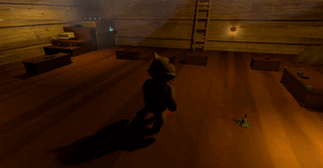
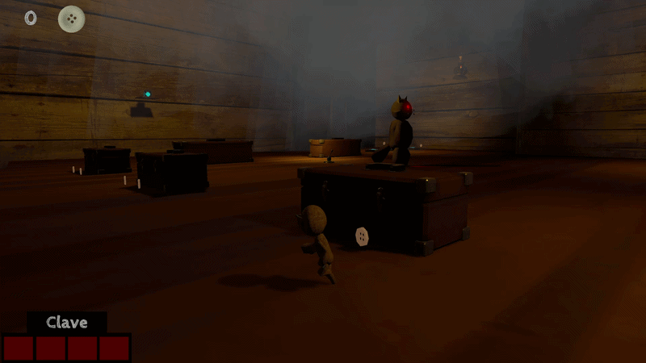

Zombie in the Village


Fue el primer Videojuego 3D desarrollado en Unity , Voodoo es un plataformer 3D con elementos de puzzle ambientado en un entorno oscuro y misterioso. El protagonista despierta atrapado en el cuerpo de un muñeco vudú y debe explorar la casa de un brujo ocultista. A lo largo del recorrido, el jugador deberá superar distintos desafíos y resolver puzzles mientras evita a otros muñecos que intentan impedir su escape. El objetivo es encontrar la forma de recuperar su verdadero cuerpo y salir con vida de este inquietante lugar.

Vigilancia de EnemyCat
Persecucion de EnemyCatCuando el EnemyCat se encuentra en estado de vigilancia, rota sobre su eje para monitorear su entorno, manteniéndose alerta hasta detectar cualquier amenaza dentro de su área de vision.
Desarrollo de un sistema de persecución en el que el EnemyCat, al detectar al jugador, cambia dinámicamente de estado y comienza a seguirlo activamente. Este comportamiento incluye lógica de transición de estados y seguimiento del objetivo en tiempo real.
using System.Collections;
using System.Collections.Generic;
using System.Threading;
using UnityEngine;
using UnityEngine.AI;
public class CatEnemy : MonoBehaviour
{
[Header("Movement")]
public NavMeshAgent navMeshAgent;
public GameObject playerPosition;
[Header("Cono de vision")]
[SerializeField] Transform eyes;
public bool canSeePlayer;
public float radius;
public LayerMask obstructionMask;
public float angle;
public bool rotating = true;
public float rotationTimer;
public float rotationMaxTimer;
public float rotationEnemy;
public CatEnemyAnimation catAnimator;
private Vector3 firstPos;
private Vector3 firstRotation;
float timer;
EnemyAudioManager enemyAudioManager;
[SerializeField] float timeOutOfView;
Vector3 lastPosPlayer;
[HideInInspector] public bool runAnimation;
[HideInInspector] public bool walkAnimation;
private void Start()
{
enemyAudioManager = GetComponent();
firstPos = transform.position;
firstRotation = transform.rotation.eulerAngles;
//Se resetea el EnemyCat
DataPersistenceManager.instance.OnLoad += LoadEnemy;
}
private void Update()
{
if (canSeePlayer)
{
// El enemigo está en modo persecución (ya vio al jugador)
walkAnimation = false; // Deja de caminar
rotationTimer = 0f; // Resetea el temporizador de rotación
rotating = false; // Deja de girar (modo vigilancia OFF)
navMeshAgent.speed = 20f; // Aumenta velocidad para perseguir
// Ajusta la posición del jugador (sube un poco en Y para mirar mejor)
Vector3 player = new Vector3(
playerPosition.transform.position.x,
playerPosition.transform.position.y + 1f,
playerPosition.transform.position.z );
// Dirección desde los ojos del enemigo hacia el jugador
Vector3 posPlayer = player - eyes.position;
// Distancia al jugador
float distanceToTarget = Vector3.Distance(eyes.position, playerPosition.transform.position);
// Verifica si está en el límite del ángulo o si hay un obstáculo (pared)
if (Mathf.Abs(Vector3.Angle(transform.forward, posPlayer) - angle / 2) < 0.01f ||
Physics.Raycast(eyes.position + transform.forward * -1f, posPlayer, distanceToTarget, obstructionMask))
{
// CASO: el enemigo perdió al jugador o no lo ve claramente
// Si ya llegó a la última posición donde vio al jugador
if (Vector3.Distance(lastPosPlayer, transform.position) <= 2)
{
navMeshAgent.enabled = false; // Detiene el movimiento
runAnimation = false; // Deja de correr
rotating = true; // Activa rotación
flipMove(); // Gira como cámara buscando
timer += Time.deltaTime; // Empieza a contar tiempo sin ver al jugador
// Si pasa mucho tiempo, se rinde
if (timer > timeOutOfView)
{
navMeshAgent.enabled = true; // Reactiva movimiento
canSeePlayer = false; // Deja de ver al jugador (sale de persecución)
}
}
else
{
// Aún no llega a la última posición → va hacia ella
navMeshAgent.enabled = true;
navMeshAgent.SetDestination(lastPosPlayer);
}
}
else
{
// CASO: el enemigo ve claramente al jugador
navMeshAgent.enabled = true; // Activa movimiento
runAnimation = true; // Activa animación de correr
lastPosPlayer = playerPosition.transform.position; // Guarda última posición del jugador
navMeshAgent.SetDestination(playerPosition.transform.position); // Persigue directamente
}
}
else
{
// El enemigo NO ve al jugador (modo normal)
runAnimation = false; // No corre
FieldOfViewCheck(); // Intenta detectar al jugador
navMeshAgent.enabled = true; // Asegura que puede moverse
// Si está lejos de su posición inicial
if (Vector3.Distance(transform.position, firstPos) > 1)
{
walkAnimation = true; // Activa caminar
navMeshAgent.SetDestination(firstPos); // Regresa a su posición inicial
}
else
{
// Si ya llegó a su punto → vigila girando
walkAnimation = false; // Deja de caminar
flipMove(); // Metodo de rotacion del EnemyCat
}
}
void flipMove()
{
if (rotating)
{
//rotacion del EnemyCat
transform.rotation *= Quaternion.Euler(0f, (transform.rotation.y + rotationEnemy) * Time.deltaTime, 0f);
rotationTimer += Time.deltaTime;
// Si el temporizador alcanza la duracion deseada, detener la rotacion
if (rotationTimer >= rotationMaxTimer)
{
rotationTimer = 0f;
rotating = false;
}
}
else
{
//detener la rotacion
rotationTimer += Time.deltaTime;
// Si el temporizador alcanza 2 segundos, reiniciar la rotacion
if (rotationTimer >= rotationMaxTimer-1)
{
rotating = true;
rotationTimer = 0f;
}
}
}
void FieldOfViewCheck()
{
// Obtiene la posición del jugador (ligeramente más arriba para apuntar al cuerpo)
Vector3 player = new Vector3(
playerPosition.transform.position.x,
playerPosition.transform.position.y + 1f,
playerPosition.transform.position.z);
// Dirección desde los ojos del enemigo hacia el jugador
Vector3 posPlayer = player - eyes.position;
// Distancia entre enemigo y jugador
float distanceToTarget = Vector3.Distance(eyes.position, playerPosition.transform.position);
// Dibuja un rayo en la escena (solo para debug en Unity)
Debug.DrawRay(eyes.position, posPlayer);
// Verifica si el jugador está dentro del ángulo de visión
// Y dentro del rango permitido
if (Vector3.Angle(transform.forward, posPlayer) < angle / 2 && distanceToTarget < radius)
{
// Verifica que NO haya paredes u obstáculos entre el enemigo y el jugador
if (!Physics.Raycast(eyes.position, posPlayer, distanceToTarget, obstructionMask))
{
// Reinicia el contador de tiempo sin ver al jugador
timer = 0;
// El enemigo detecta al jugador → activa persecución
canSeePlayer = true;
// Reproduce sonido de detección
enemyAudioManager.DetecPlayer();
}
}
}
void LoadEnemy()
{
// Desactiva la animación de correr
runAnimation = false;
// Activa animación de vigilancia (idle girando)
catAnimator.anim.SetBool("spin", true);
// Asegura que el enemigo NO esté persiguiendo al cargar
if (canSeePlayer == true)
canSeePlayer = false;
// Regresa a su posición inicial
transform.position = firstPos;
// Restaura su rotación original
transform.rotation = Quaternion.Euler(firstRotation);
// Reinicia el temporizador de rotación
rotationTimer = 0f;
// Activa nuevamente el modo vigilancia (girar)
rotating = true;
// Reinicia el NavMeshAgent para evitar errores de movimiento
navMeshAgent.enabled = false;
navMeshAgent.enabled = true;
}
}
}